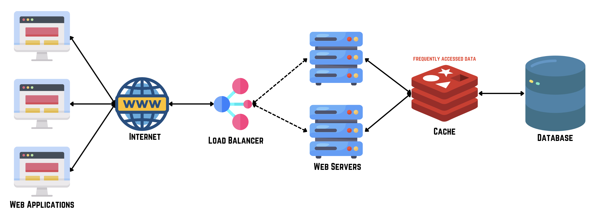
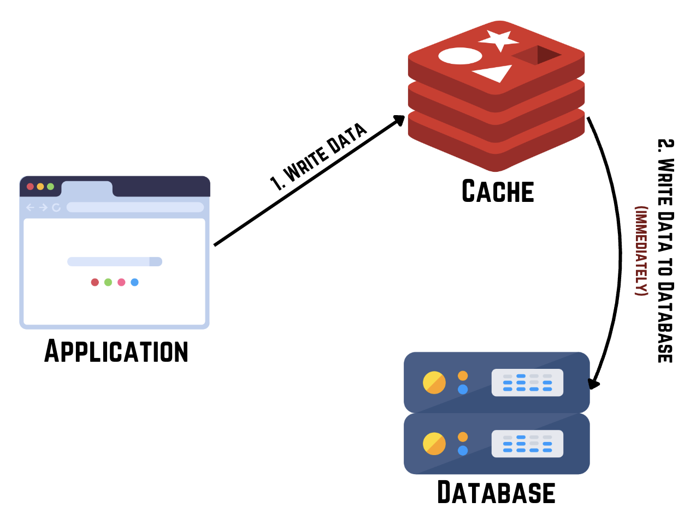
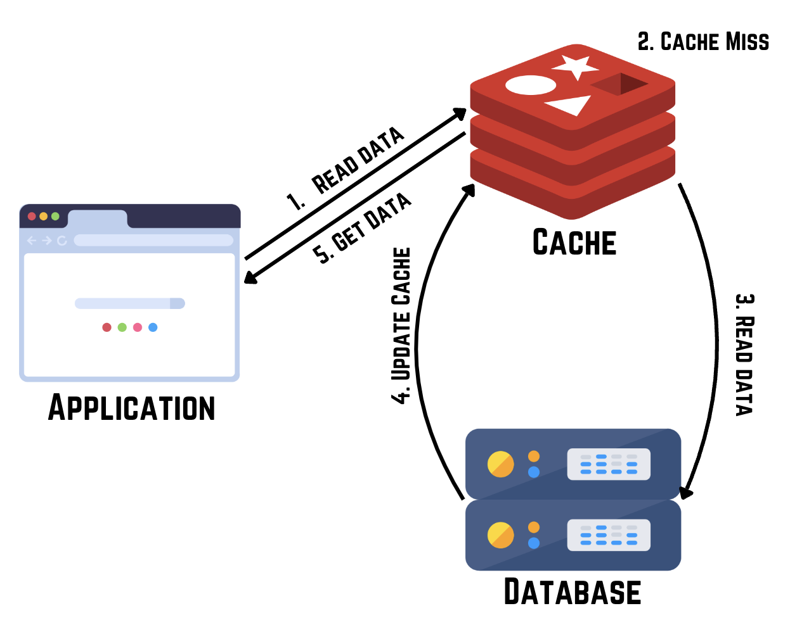
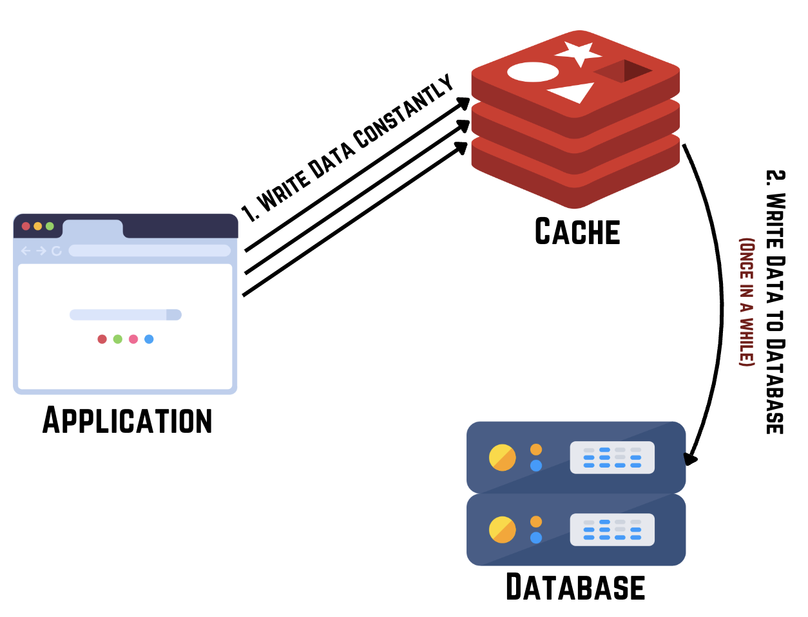
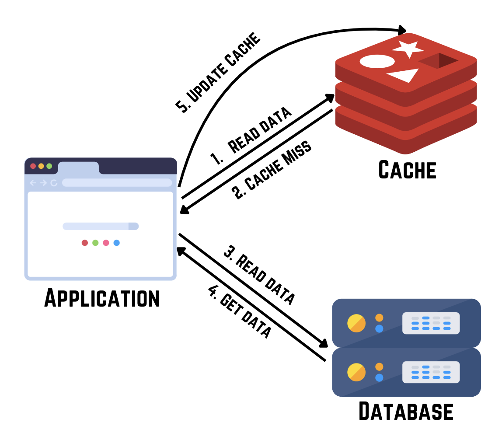
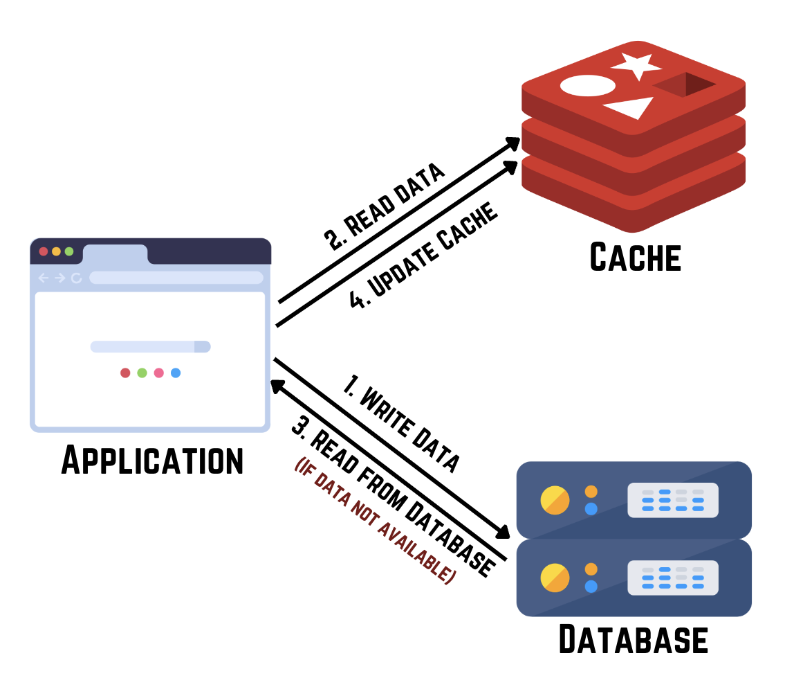
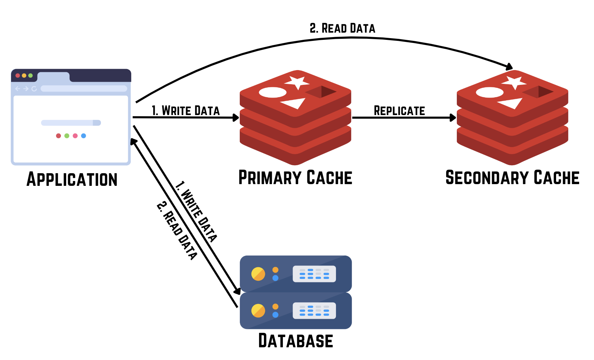

Caching
Caching is a fundamental technique used in computing to enhance performance by storing frequently accessed data temporarily, thereby reducing access times to slower storage systems. It functions like a handy cheat sheet that retrieves information quickly without the need for extensive searching.

Types of Caching
1. Browser Cache
Browser caching involves storing elements of a website (like HTML pages, images, scripts, and stylesheets) locally on a user's device. This allows subsequent visits to the same website to load faster as the browser retrieves content from its cache rather than the server.
Benefits: Faster page loads, reduced server load, and improved user experience by minimizing resource downloads.
2. Server-Side Cache
Server-side caching stores frequently accessed data on the server itself. This can include database query results or pre-rendered web pages, allowing the server to quickly respond to user requests without generating data from scratch.
Benefits: Improved response times, reduced database load, and better scalability under high traffic conditions.
3. Content Delivery Network (CDN) Cache
A CDN caches static content (like images, videos, and files) across multiple servers distributed globally. When a user requests content, it's served from the nearest CDN server instead of the origin server, reducing latency and improving download speeds.
Benefits: Faster content delivery, enhanced website performance worldwide, and increased resilience against server failures.
4. Application Cache
Application caching stores entire web pages or resources locally, enabling applications (especially progressive web apps) to function offline or with limited connectivity.
Benefits: Continuous access to critical data, improved performance in low-connectivity environments, and enhanced usability.
5. DNS Cache
DNS caching occurs at various levels (operating system, ISP, DNS servers), storing recent DNS lookups to expedite domain name resolution in subsequent requests.
Benefits: Reduced DNS lookup times, faster website access, and improved browsing experience by minimizing network latency.
Advanced Caching Strategies
1. Write-Through Cache
Data is immediately written to both the cache and main storage upon a write operation, ensuring data consistency and improving read performance.

2. Read-Through Cache
Data is fetched from main storage into the cache on cache misses during read operations, reducing read latency and enhancing system responsiveness.

3. Write-Aside Cache (Write-Behind Cache)
Data is first written to the cache and asynchronously to the main storage, optimizing write performance and allowing applications to continue processing without waiting for storage writes.

4. Cache-Aside (Lazy Loading or Lazy Population)
Applications fetch data from main storage if not found in the cache, providing flexibility in caching specific data based on application needs.

5. Write Around Cache
Write-around cache is a caching strategy where data is written directly to the underlying storage and bypasses the cache, typically used for data that doesn't need to be read frequently but needs to be persisted.

6. Distributed Cache
Data is distributed across multiple networked servers, reducing latency and enhancing availability and resilience by replicating data across nodes.

Caching is critical for optimizing system performance, reducing latency, and improving scalability in computing environments. By leveraging various caching strategies—from browser and server-side caching to CDN and application-specific caching—organizations can achieve faster data access, maintain data integrity, and enhance overall system efficiency across diverse computing scenarios. Each caching strategy offers unique advantages tailored to specific application requirements, ensuring reliable and responsive data access and management.